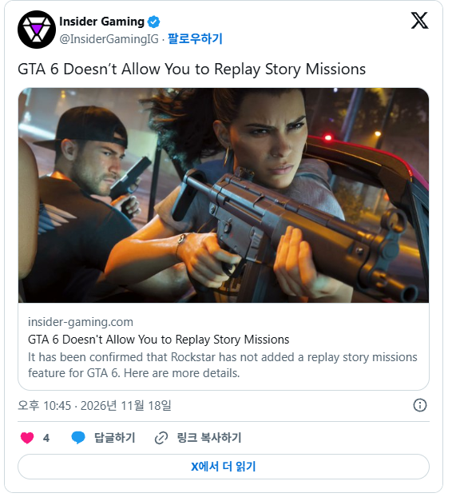

왜 안됨? = 당신의 선택이 다양한 결과로 이어지기 때문
아니 그러면 진짜로 처음부터 다시해야함? = ㄴㄴ GTA6에는 수동 저장 슬롯이 15개에 잇어서 리트하고싶으면 일일이 수동 저장해야함

왜 안됨? = 당신의 선택이 다양한 결과로 이어지기 때문
아니 그러면 진짜로 처음부터 다시해야함? = ㄴㄴ GTA6에는 수동 저장 슬롯이 15개에 잇어서 리트하고싶으면 일일이 수동 저장해야함
좋네
마 옛날엔 슬롯이 3개밖에 없섰숴~
이건 스토리겜이면 대부분 다 그러지 않나
이전 gta들은 동일미션 재도전해서 등급따는게 됐으니까
스토리미션이 재도전이 됐었나? 애초에 스토리미션에 등급같은게 있었나?
ㅇㅇ 금은동 메달따는거 있었음
그랬었나 ㅋㅋ 메달작 좋아하는데 그냥 포기했었나봄 ㅋㅋ 그 경비행기타고 링통과하고 그런거만 시간 맞추겠다고 했던 기억나고 나머지는 전혀 기억이 안나부러
ㅇㅇ 클리어 타임 같은걸로 등급 있어서 스토리 다밀고 리트하면서 땃었음
스토리 미션 등급따는거 솔직히 별로였는데 없어진거냐? 개꿀이네
메인 미션 하기 전에는 미리 수동저장 해야겠네
리트냥이
게임이 다 그렇지 않나? 뭔가 특별한게 있었어???
이게 사실 근본이긴 해
오토세이브랑 클라우드저장 쓰면서부터 뭔가 없는모양새처럼 되긴했지만
메인스토리는 그냥 지나가는게 맞지않나? 뭐가 있음?
지트냥이
LEET가 안된다고?
GTA5는 거진 선형 진행이라 선택지랄 게 없어서 스토리퀘 메달작 한다고 미션만 골라서 리트하는 게 가능했음. GTA6는 분기가 나뉘나보네
리트도 칠수있냐 GTA6 갓겜 ㅅㅂ
회차 돌려야되나
GTA4였나 5에도 그런거 있지 않았나 항구 미션중에 배 터트리거나 냅두거나 하는거 터트리면 영구적으로 맵에 터진배가 남아있는 ㅋㅋ
리트?
AI로 리트하면 안되냐? 안되냐고요!!
재현이 안된다는것도 리트냥이네
레데리2도 그랬는데 뭐가 놀랍나?
레데리2랑 똑같네
어허 gta 시리즈는 원래 그랬어, 심지어 미션중 체크포인트도 없어서 실패하면 처음부터 해야했다고
레데리도 그렇잖아
세이브로드로 루트플레이하는 건 약간 rpg같은 느낌이긴 하네